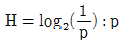
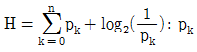
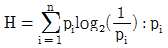
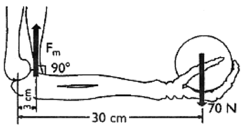
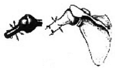
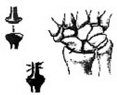
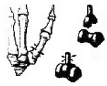
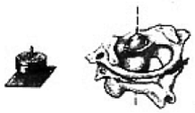

인간공학기사 (2006-08-06 기출문제)
1과목: 인간공학개론
1. 인간공학에 대한 설명으로 가장 옳은 것은?
- 인간공학의 다른 이름인 작업 경제학(ergonomics)은 경제학에서 파생되었다.
- 인간공학에서 다루는 내용은 상식 수준이다.
- 인간이 사용할 수 있도록 설계하는 과정이다.
- 초정이 인간보다는 장비/도구의 설계에 맞추어져 있다.
(정답률: 80%)

2. 인간이 한 자극 차원 내에서 절대적으로 식별할 수 있는 자극의 수를 나열한 것 중 관계가 먼 것은?
- 음량 : 4~5개
- 단순음 : 5개
- 휘도 : 7~8개
- 보는 물체의 크기 : 5~7개
(정답률: 78%)
3. 다음 중 시각적 표시자이보다 청각적 표시장치를 사용해야 할 경우는?
- 전언이 복잡하다.
- 전언이 길다.
- 전언이 시간적 사상을 다룬다.
- 전언이 후에 재창조된다.
(정답률: 81%)
4. 인체계측치 중 기능적(functional) 치수를 사용하는 이유로 가장 올바른 것은?
- 사용 공간의 크기가 중요하기 때문
- 인간은 닿는 한계가 있기 때문
- 인간이 다양한 자세를 취하기 때문
- 각 신체부위는 조화를 이루면서 움직이기 때문
(정답률: 83%)
5. 작업자세 결정시 고려해야 할 분석자료로 가장 거리가 먼 것은?
- 작업자와 작업참의 거리 및 높이
- 작업자의 힘과 작업자의 성별
- 기계의 신뢰도
- 작업 장소의 넓이
(정답률: 80%)
6. 평균치기준의 설계원칙에서는 조절식 설계가 바람직하다. 이 때의 조절 범위는?
- 1~99%
- 5~95%
- 5~90%
- 10~90%
(정답률: 76%)
7. 신호검출이론(SDT)과 관련이 없는 것은?
- 신호검출이론은 신호와 잡음을 구별할 수 있는 능력을 측정하기 위한 이론의 하나이다.
- 민감도는 신호와 소음분포의 평균간의 거리이다.
- 신호검출이론 응용분야의 하나는 품질검사 능력의 측정이다.
- 신호검출이론이 적용될 수 있는 자극은 시각적 자극에 극한된다.
(정답률: 79%)
8. 구조적 인체치수 측정방법 중 틀린 것은?
- 형태학적 측정이라고 한다.
- 마틴식 인체측정기를 사용한다.
- 측정은 나체로 측정함을 원칙으로 한다.
- 일반적으로 하지나 상지의 운동 상태에서 측정한다.
(정답률: 94%)
9. 종이의 반사율이 70%이고, 인쇄된 글자의 반사율이 15%일 경우 대비는?
- 15%
- 21%
- 70%
- 79%
(정답률: 58%)
10. 정보량을 구하는 수식 중 틀린 것은?
- H = log2n : n = 대안의 수

= 대안의 실현확률
= 각 대안의 실패 확률
= 각 대안의 실현 확률
(정답률: 83%)
11. 정량적 표시장치의 지침을 설계할 경우 고려하여야 할 사항 중 틀린 것은?
- 끝이 뾰족한 지침을 사용할 것
- 지침의 끝이 작은 눈금과 겹치게 할 것
- 지침의 색은 선단에서 눈금의 중심까지 칠할 것
- 지침을 눈금 면과 밀착시킬 것
(정답률: 84%)
12. 세면대 수도 꼭지에서 찬물은 오른쪽 푸른색으로 되어있는 곳에서 나오기를 기대하는데 이는 무엇과 연관이 있는가?
- compatibility
- lock-out
- fail-safe
- possibility
(정답률: 85%)
13. 반지름이 10cm인 조종 장치를 30도 움직일 때 마다 표시장치는 1cm 이동한다고 할 때, C/R비는 얼마인가?
- 2.09
- 3.49
- 4.11
- 5.23
(정답률: 50%)
14. 다음 중 phon의 설명으로 틀린 것은?
- 상이한 음의 상대적 크기에 대한 정보는 나타내지 못한다.
- 1,000Hz 대의 20dB 크기의 소리는 20phon 이다.
- 40dB의 1,000Hz 순음을 기준으로 하여 다른 음의 상대적인 크기를 설정하는 척도의 단위이다.
- 1,000Hz의 주파수를 기준으로 각 주파수별 동일한 음량을 주는 음압을 평가하는 척도의 단위이다.
(정답률: 63%)
15. 인간이 정보를 작업 기억(Working memory) 혹은 장기기억(long-term memory)내의 효율적으로 유지할 수 있는 방법으로 틀린 것은?
- 암송(rehearsal)
- 다차원(multidimensional)의 암호 사용
- 의미론적(semantical) 암호 사용
- 정보를 이미지화(형상화)하여 기억
(정답률: 77%)
16. 동목정침형(moving scale and fixed pointer) 표시장치가 정목동침형(moving pointer and fixed scale) 표시장치에 비하여 더 좋은 경우는?
- 나타내고자 하는 값의 범위가 큰 경우에 유리하다.
- 정량적인 눈금을 정성적으로도 사용할 수 있다.
- 기계의 표시장치 공간이 협소한 경우에 유리하다.
- 특정 값을 신속, 정확하게 제공할 수 있다.
(정답률: 75%)
17. 표시장치를 사용할 때 자극 전체를 직접 나타내거나 재생시키는 대신, 정보(즉, 자극)를 암호화하는 경우가 흔하다. 이와 같이 정보를 암호화하는 데 있어서 지켜야 할 일반적 지침으로 틀린 것은?
- 암호의 양립성
- 암호의 검출성
- 암호의 변별성
- 암호의 민감성
(정답률: 76%)
18. 인간의 피부가 느끼는 3종류의 감각에 속하지 않는 것은?
- 암각
- 동각
- 미각
- 열각
(정답률: 80%)
19. 작업장에 인간공학을 적용함으로써 얻게 되는 효과로 틀린 것은?
- 이직률 및 작업손실 시간의 감소
- 회사의 생산성 증가
- 노사간의 신뢰성 저하
- 작업자에게 더 건강하고 안전한 작업조건
(정답률: 95%)
20. 두 가지 이상의 신호가 인접하여 제시되었을 때 이를 구별하는 것은 인간의 청각 신호 수신기능 중에서 어느 것과 관련 있는가?
- 위치 판별
- 절대 식별
- 삼대 식별
- 청각 신호검출
(정답률: 72%)
2과목: 작업생리학
21. 다음 중 정신부하의 측정에 사용되는 것은?
- 부정맥
- 산소 소비량
- 에너지 소비량
- 혈압
(정답률: 75%)
22. 해부학적 자세를 표현하기 위하여 사용하는 인체의 면을 나타내는 용어 중 인체를 좌우로 양분하는 면에 해당하는 용어는?
- 관상면 (Frontal plane)
- 횡단면 (Transverse plane)
- 시상면 (Sagittal plane)
- 수평면 (Horizontal plane)
(정답률: 63%)
23. 다음 중 근육의 정적상태의 근력을 나타내는 것은?
- 등속성 근력(Isokinetic strength)
- 등장성 근력(Isotonic strength)
- 등관성 근력(Isoinertia strength)
- 등척성 근력(Isometric strength)
(정답률: 75%)
24. 육체적 작업을 할 경우 신체의 특정 부위의 스트레스 또는 피로를 측정하는 방법은?
- 에너지 소비량
- 심박수
- 근전도
- 산소 소모량
(정답률: 70%)
25. 그림과 같이 한손에 70N의 무게(weight)를 떨어뜨리지 않도록 유지하려면 노뼈(척골 또는 radius)위에 붙어 있는 위팔두갈래근(biceps brachii)에 의해 생성되는 힘 Fm은 얼마이어야 하는가? (단, 위팔두갈래근은 팔굽관절(elbow joint)의 회전 중심으로부터 3cm 떨어진 곳에 붙어 있고 90° 각을 이루며, 손위 물체의 무게중심과 팔굽관절의 회전중심과의 거리는 30cm 이다. 또한 전완(forearm)과 손의 무게 거리는 30cm 이다. 또한 전완(forearm)과 손의 무게 그리고 위팔두갈래근 외의 근육 활동은 모두 무시한다.)

- 400N
- 500N
- 600N
- 700N
(정답률: 41%)
26. 산업 현장에서 열 스트레스(heat stress)를 결정하는 주요 요소가 아닌 것은?
- 전도(conduction)
- 대류(convection)
- 복사(radiation)
- 증발(evaporation)
(정답률: 65%)
27. 인간과 주위와의 열교환 과정을 올바르게 나타낸 열균형 방정식은?
- S(열축적) = M(대사) - E(증발) - R(복사) ± C(대류) + W(한 일)
- S(열축적) = M(대사) ± E(증발) - R(복사) ± C(대류) - W(한 일)
- S(열축적) = M(대사) - E(증발) ± R(복사) - C(대류) - W(한 일)
- S(열축적) = M(대사) - E(증발) ± R(복사) ± C(대류) - W(한 일)
(정답률: 50%)
28. 효율적인 교대작업 운명을 위한 방법이 아닌 것은?
- 2교대 근우는 최소화하며, 1일 2교대 근무가 불가피한 경우에는 연속 근무일이 2~3일이 넘지 않도록 한다.
- 고정적이거나 연속적인 야간근무 작업은 줄인다.
- 교대일정은 정기적이고 근로자가 예측 가능하도록 해주어야 한다.
- 교대작업은 주간근무 → 야간근무 → 저녁근무 → 주간근무 식으로 진행해야 피로를 빨리 회복할 수 있다.
(정답률: 82%)
29. 신경세포(neuron)에 있어 활동전위(action potential)에 대한 설명 중 틀린 것은?
- 축색(axon)의 지름이 커지면 저항이 커져 활동전위의 전도속도가 느려진다.
- 신경의 세포막은 K+과 Na+에 대해 투과성이 변화하는 능력이 있다.
- 활동전위의 전도속도는 30m/sec로 전선에 흐르는 전기의 속도에 비해 상당히 느리다.
- 특정 부위의 활동전위는 인접 부분의 전위를 중하시켜 신경 충동을 전파한다.
(정답률: 60%)
30. 영상표시 단말기(VDT) 증후군을 예방하기 위한 작업장 조명 관리 방법으로 적합하지 않은 것은?
- 작업물을 보기 쉽도록 주위 조명 수준을 정일 시각 작업에 적정한 1,000lix 이상으로 높게 한다.
- 화면 반사를 줄이기 위해 산란된 간접조명을 사용한다.
- 화면이 창과 직각이 되게 위치시킨다.
- 화면 상의 배경은 밝게 하고 글자는 어두운 색을 사용한다.
(정답률: 72%)
31. 기초대사율(BMR)에 대한 설명으로 틀린 것은?
- 일상생활을 하는데 필요한 다위 시간당 에너지량이다.
- 일반적으로 신체가 크고 젊은 남성의 BMR이 크다.
- BMR은 개인차가 심하며 체중, 나이, 성별에 따라 달라진다.
- 성인 BMR은 대략 1.0~1.2kcal/min 정도이다.
(정답률: 50%)
32. 팔을 수평으로 편 위치에서 수직위치로 내릴 때 처럼 신체 중심선을 향한 신체부위의 동작은?
- 굴곡(굽형, flexion)
- 내전(모음, adduction)
- 신전(평, extension)
- 외전(빌림, abduction)
(정답률: 80%)
33. 뇌파(EEG)의 종류 중 안정시에 나타나는 뇌파의 형은?
- α 파
- β 파
- δ 파
- γ 파
(정답률: 83%)
34. 아래의 윤활관절(synovial joint) 중 연결형태가 안장관절(saddle joint)은 어느 것인가?




(정답률: 65%)
35. 교대근무는 수면과 밀접한 관계가 있으며, 수면은 체온과 밀접한 관계가 있다. 하루 중 체온이 가장 낮은 시간대는?
- 오전 2시 전후
- 오전 5시 전후
- 오후 2시 전후
- 오후 5시 전후
(정답률: 81%)
36. 체내에서 유기물의 합성 또는 분해에 있어서는 반드시 에너지의 전환이 따르게 되는데 이것을 무엇이라 하는가?
- 산소부채(oxygen debt)
- 에너지 대사(energy metabolism)
- 근전도(electromyogram)
- 심전도(electrocardiogram)
(정답률: 80%)
37. 간장의 주요 척도들 중 생리적 기장의 정도를 측정할 수 있는 화학적 척도가 아닌 것은?
- 혈액 성분
- 혈압
- 산소 소비량
- 뇨 성분
(정답률: 68%)
38. 근육 구조에 관한 설명으로 틀린 것은?
- 기본 근육 세포단위는 근육 다발이다.
- 수축이나 이완시 actin이나 myosin의 길이가 변한다.
- 연결조작이 중추신경으로부터 신호를 근육에 전달한다,
- myosin은 두꺼운 필라멘트로 근성유 분절의 가운데 위치하고 있다.
(정답률: 69%)
39. 다음 중 신체 반응 측정 장비와 내용을 잘못 짝지은 것은?
- EOG - 안구를 사이에 두고 수평과 수직 방향으로 묻인 전극간의 전위차를 증폭시켜 여러 방향에서 안구 운동을 기록한다.
- EMG - 정신적 스트레스를 측정, 기록한다.
- ECG - 심장근의 수축에 따른 전기적 변화를 피부에 부착한 전극들로 검출, 증폭 기록한다.
- EEG -뇌의 활동에 따른 전휘 변화를 기록 한다.
(정답률: 75%)
40. 연속적 소음으로 인한 청력 손실 상황은?
- 방직 공정 작업자의 청력 손실
- 밴드부 지휘자의 청력 손실
- 사격 교관의 청력 손실
- 낙하 단조 장치(drop-forge) 조작자의 청력 손실
(정답률: 83%)
3과목: 산업심리학 및 관계법규
41. 조작자 한 사람의 성능 신뢰도가 0.8 일 때 요원을 중복하여 2인 1조가 작업을 진행하는 공정이 있다. 전체 작업 기간의 60% 정도만 요원을 지원한다면, 이 조의 인간 신뢰도는 얼마인가?
- 0.816
- 0.896
- 0.962
- 0.965
(정답률: 67%)
42. 주의에 대한 특성 중 선택성에 대한 설명으로 옳은 것은?
- 주의에는 리듬이 있어 언제나 일정한 수준을 지키지 못한다.
- 사람의 경우 한 번에 여러 종류의 자극을 지각하는 것은 어렵다.
- 공간적으로 시선에서 벗어난 부분은 무시되기 쉽다.
- 한 지정에 주의를 하면 다른 곳의 주의는 약해진다.
(정답률: 56%)
43. 집단을 이루는 구성원들이 서로에게 매력적으로 끌리어 그 집단 목표를 공유하는 점도를 무엇이라고 하는가?
- 집단 협력성
- 집단 단결성
- 집단 응집성
- 집단 목표성
(정답률: 82%)
44. 민주적 리더십에 대한 설명으로 옳은 것은?
- 리더에 의한 모든 정책의 결정
- 리더의 지원에 의한 집단 토론식 결정
- 리더의 과업 및 과업 수행 구성원 지정
- 리더의 최소 개입 또는 개인적인 결정의 완전한 자유
(정답률: 65%)
45. 라스무센(Rasmussen)은 인간 행동의 종류 또는 수준에 따라 휴면 에러를 3가지로 분류하였는데 이에 속하지 않는 것은?
- 숙련기반 에러(Skill-based error)
- 기억기반 에러(Memory-based error)
- 규칙기반 에러(Rule-based error)
- 지식기반 에러(Knowledge-based error)
(정답률: 80%)
46. 민주적 리더쉽 발휘와 관련된 적절한 이론이나 조직 형태는?
- X 이론
- Y 이론
- 관료주의 조직
- 라인형 조직
(정답률: 83%)
47. 근로자가 작업 중에 소비한 에너지가 5kcal/min 이고, 휴식중에는 1.5kcal/min의 에너지를 소비하였다면 이 작업의 에너지 대사율(RMR)은 얼마인가? (단, 근로자의 기초 대사량은 분당 1kcal 라고 한다.)
- 2.5
- 2.8
- 3.2
- 3.5
(정답률: 38%)
48. 인간실수의 요인 중 성격이 다른 한 가지는 무엇인가?
- 단조로운 작업
- 양립성에 맞지 않는 상황
- 동일 형상, 유사 형상의 배열
- 체형적 습관
(정답률: 70%)
49. 인간의 불안전한 행동을 유발하는 외적 요인이 아닌 것은?
- 인간관계 요인
- 생리적 요인
- 작업적 요인
- 작업환경적 요인
(정답률: 75%)
50. 리더쉽 이론 중 ‘관리격자 이론’에서 인간중심 지향적으로 직무에 대한 관심이 가장 낮은 유형은?
- (1.1)형
- (1.9)형
- (9.1)형
- (9.9)형
(정답률: 62%)
51. 다음 중 스트레스에 대한 설명으로 틀린 것은?
- 스트레스는 양면성을 가지고 있다.
- 스트레스는 지각 또는 경험과 관계가 있다.
- 스트레스는 있는지 혹은 없는지의 2차원적인 성질을 갖고 있다.
- 스트레스가 항상 부정적인 것만은 아니다.
(정답률: 79%)
52. 제조율책임법에서 분류하는 결함의 종류가 아닌 것은?
- 제조상의 결함
- 설계상의 결함
- 사용상의 결함
- 표시상의 결함
(정답률: 87%)
53. 재해발생 원인 중 간접적 원으로 거리가 먼 것은?
- 기술적 원인
- 교육적 원인
- 신체적 원인
- 인적 원인
(정답률: 56%)
54. 인간이 과도로 긴장하거나 감정 흥분시의 의식수준 단계로서 대뇌의 활동력은 높지만 냉정함이 결여되어 파단이 둔화되는 의식수준 단계는?
- phase 1
- phase 2
- phase 3
- phase 4
(정답률: 75%)
55. 조직에서 직능별 전문화의 원리와 명령 일원화의 원리를 조화시킬 목적으로 형성한 조직은?
- 작계참모 조직
- 위원회 조직
- 직능식 조직
- 직계식 조직
(정답률: 61%)
56. 스트레스에 대한 조직수준의 관리방안 중 개인의 역할을 명확히 해 증으로서 스트레스의 발생원인을 제거시키는 방법은?
- 경력개발
- 과업재설계
- 역할분석
- 팀 형성
(정답률: 79%)
57. 재해의 기본 원인을 조사하는 데에는 관련 요인들을 4M방식으로 분류하는데 다음 중 4M에 해당하지 않는 것은?
- Machine
- Material
- Management
- Media
(정답률: 76%)
58. 지능과 작업간의 관계에 대한 설명으로 가장 적절한 것은?
- 작업수행자의 지능은 높을수록 바람직하다.
- 작업수행자의 지능이 낮을수록 작업수행도가 높다.
- 작업특성과 작업자 지능간에는 특별한 관계가 없다.
- 각 작업에는 그에 적정한 지능수준이 존재한다.
(정답률: 78%)
59. 휴먼에러와 기계의 고장과의 차이점을 설명한 것 중 틀린 것은?
- 인간의 실수는 우발적으로 재발하는 유형이다.
- 기계와 설비의 고장조건은 저절로 복귀되지 않는다.
- 인간은 기계와는 달리 학습에 의해 계속적으로 성능을 향상시킨다.
- 인간 성능과 압박(stress)은 선형관계를 가져 압박이 중간정도일 때 성능수준이 가장 높다.
(정답률: 78%)
60. 산업재해 조사표에서 재해 발생 형태에 따른 재해 분류가 아닌 것은?
- 폭발
- 협착
- 감전
- 질식
(정답률: 65%)
4과목: 근골격계질환 예방을 위한 작업관리
61. 유해요인 조사 방법에 관한 설명으로 틀린 것은?
- NIOSH Guideline은 중량물 작업의 분석에 이용된다.
- RULA. OWAS는 자세 평가를 주목적으로 한다.
- REBA는 상지, RULA는 하지자세를 평가하기 위한 방법이다.
- JSI는 작업의 재설계 등을 검토할 때에 이용한다.
(정답률: 82%)
62. 다음 중 유해요인 조사의 내용과 거리가 먼 것은?
- 표준시간
- 작업조건
- 작업장 상황
- 근골격계질환 증상
(정답률: 66%)
63. NIOSH의 들기 방정식(Lifting Equation)에 관련된 설명으로 틀린 것은?
- 권고중량한계(RWL)란 대부분의 건강한 작업자들이 요동의 위험없이 작업시간동안 들기작업을 할 수 있는 작업들의 무게를 의미한다.
- 들기지수(LI)는 물체 무게와 권고중량한계의 비율로 나타낸다.
- 들기지수(LI),가 3을 초과하면 ‘일부’ 작업자에게서 들기작업과 관련된 요동발생의 위험수준이 증가한다는 것을 의미한다.
- 들기 방정식은 물건을 들어올리는 작업과 내리는 작업이 요동에 대해 같은 위험수준을 갖는다고 가정한다.
(정답률: 61%)
64. 작업관리의 목적으로 거리가 먼 것은?
- 작업장법의 개선
- 재료, 방법 등의 표준화
- 비능률적 요소의 제거
- 노동량의 단순 증가
(정답률: 70%)
65. 보다 많은 아이디어를 창출하기 위하여 가능한 모든 의견을 비판없이 받아들이고 수정 발언을 허용하며 대량 발언을 유도하는 방법은?
- Brainstorming
- ECRS 원칙
- Mind Mapping
- SEARCH
(정답률: 77%)
66. 신체 사용에 관한 동작 경제 원칙 중에서 가장 거리가 먼 것은?
- 양손은 동시에 시작하고 멈춘다.
- 양손이 향상 같이 쉬도록 한다.
- 두 팔은 서로 반대 방향으로 대칭적으로 움직이도록 한다.
- 가능하다면 쉽고도 자연스러운 리듬이 생기도록 동작을 배치한다.
(정답률: 60%)
67. 수작업에 관한 작업지침으로 옳은 것은?
- 내편향(우골편향) 손자세가 외편향(척골편향) 자세보다 일반적으로 더 위험하다.
- 가능하면 손목각도를 5~10도로 굽히는 것이 편안한 자세이다.
- 장갑을 사용하면 쥐는 힘이 일반적으로 더 좋아진다.
- 힘이 요구되는 작업에는 Power Grip을 사용한다.
(정답률: 67%)
68. 근골격계질환의 발생에 기여하는 작업적 유해요인과 가장 거리가 먼 것은?
- 과도한 힘의 사용
- 불편한 작업자세의 반복
- 부적절한 작업/휴식 비율
- 개인보호장구의 미착용
(정답률: 86%)
69. 직업성 근골격계질환의 유형으로 분류되기 어려운 것은?
- 컴퓨터 작업자의 안구건조증
- 전자제조업 조립작업자의 건초염
- 물류창고 중량을 취급자의 활액낭염
- 육류가공업 작업자의 수근관증후군
(정답률: 85%)
70. 작업개선을 위해 검토할 착안 사항과 거리가 먼 항목은?
- “이 작업은 꼭 필요한가? 제거할 수는 없는가?”
- “이 작업을 다은 작업과 결합시키면 더 나은 결과가 생길 것인가?”
- “이 작업을 기계화 또는 자동화 할 경우의 투자효과는 어느 정도인가?”
- “이 작업의 순서를 바꾸면 좀 더 효율적이지 않을까?”
(정답률: 81%)
71. 작업분석의 문제분석 도구 중에서 ‘원인결과도’라고도 불리며 결과를 일으킨 원인을 5~6개의 주요 원인에서 시작하여 세부원인으로 점진적으로 찾아가는 기법은?
- 파레토분석 차트
- 특성요인도
- 간트 차트
- PERT 차트
(정답률: 77%)
72. 정상작업영역(최소작업영역)의 설명으로 옳은 것은?
- 상완(윗팔)과 전완(아랫팔)을 골데 펴서 파악할 수 있는 구역을 말한다.
- 상완을 수직으로 늘어뜨린 채, 전완만으로 파악할 수 있는 구역을 말한다.
- 모든 작업공구와 부품이 이 구역내에 위치해야 한다.
- 모든 작업자가 편안하게 작업할 수 있는 작업영역을 말한다.
(정답률: 82%)
73. 근골격계 질환의 예방에서 단기적 관리방안이 아닌 것은?
- 관리자, 작업자, 보건관리자 등에 인간공학 교육
- 근골격계 질환 예방관리 프로그램 도입
- 교대근무에 대한 고려
- 안전한 작업방범 교육
(정답률: 76%)
74. A 공장에서 한 제품의 가공작업의 평균시간이 3분, 레이팅 계수가 1⑤%, 여유율이 15%라고 할 때 외경법에 의한 표준시간은?
- 3.42분
- 3.62분
- 3.71분
- 3.81분
(정답률: 49%)
75. 작업장 개선에 있어서 관리적 해결방안이 아닌 것은?
- 작업 확대
- 작업자세 및 작업방법
- 작업자 교육
- 작업자 교대
(정답률: 38%)
76. 디자인 프로세스의 과정을 바르게 나열한 것은?
- 문제 분석 → 대안 도출 → 문제 형성 → 대안 평가 → 선정안 제시
- 문제 형성 → 대안 도출 → 선정안 제시 → 문제 분석 → 대안 평가
- 문제 형성 → 대안 도출 → 대안 평가 → 문제 분석 → 선정안 제시
- 문제 형성 → 문제 분석 → 대안 도출 → 대안 평가 → 선정안 제시
(정답률: 74%)
77. 워크 샘플링(Work Sampling)에 관한 설명으로 옳은 것은?
- 표준시간 설정에 이용할 경우 레이팅이 필요 없다.
- 작업순서를 기록할 수 있어 개개의 작업에 대한 깊은 연구가 가능하다.
- 작업자가 의식적으로 행동하는 일이 적어 결과의 신뢰 수준이 높다.
- 반복 작업인 경우 적당하다.
(정답률: 57%)
78. 근골격계 질환 예방·관리교육에서 작업자에 대한 필수적인 교육내용으로 틀린 것은?
- 근골격계부담 작업에서의 유해요인
- 예방·관리 프로그램의 수림 및 운영 방법
- 작업도구와 장비 등 작업시설의 올바른 사용 방법
- 근골격계 질환 발생 시 대처요령
(정답률: 79%)
79. 동작분석의 종류 중에서 미세 동작분사거의 장점이 아닌 것은?
- 직접 관측자가 옆에 없어도 측정이 가능
- 적은 시간과 비용으로 연구 가능
- 복잡하고 세밀한 작업 분석 가능
- 작업 내용과 작업 시간을 동시에 측정 가능
(정답률: 69%)
80. 다음 설명 중 틀린 것은?
- 부적절한 자세는 신체 부위들이 중립적인 위치를 취하는 자세이다.
- 부적절한 자세는 강하고 큰 근육들을 이용하여 작업하는 것을 방해한다.
- 서 있을 때는 등뼈가 S 곡선을 유지하는 것이 좋다.
- pinch grip은 power grip보다 좋지 않다.
(정답률: 74%)